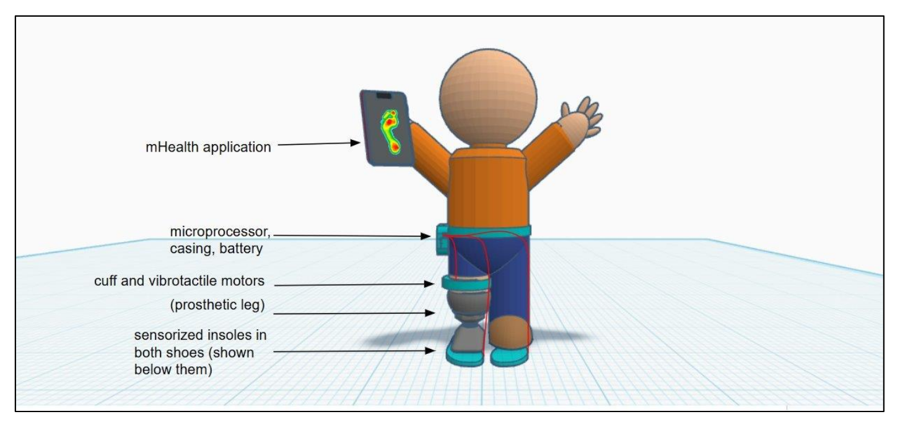

Projects
Third Year Project: SoleMate
This project was submitted for the B3: Group Design Project for an MEng in Engineering Science at University of Oxford.
It describes the design of a novel somatosensory feedback replacement device to improve the walking gait of lower limb amputees.
Mathworks Minidrone competition
At the end of my second year of university, I entered the MathWorks Minidrone competition with 3 other Oxford students in Maths and Engineering. We programmed a quadrotor to use data from and onboard camera to follow an unseen path and land on a landing pad.
You can read more on Oxford's website.
EPSRC-funded Research Project: Model free control policy search for liftable systems
 findings at a poster presentation.
findings at a poster presentation.